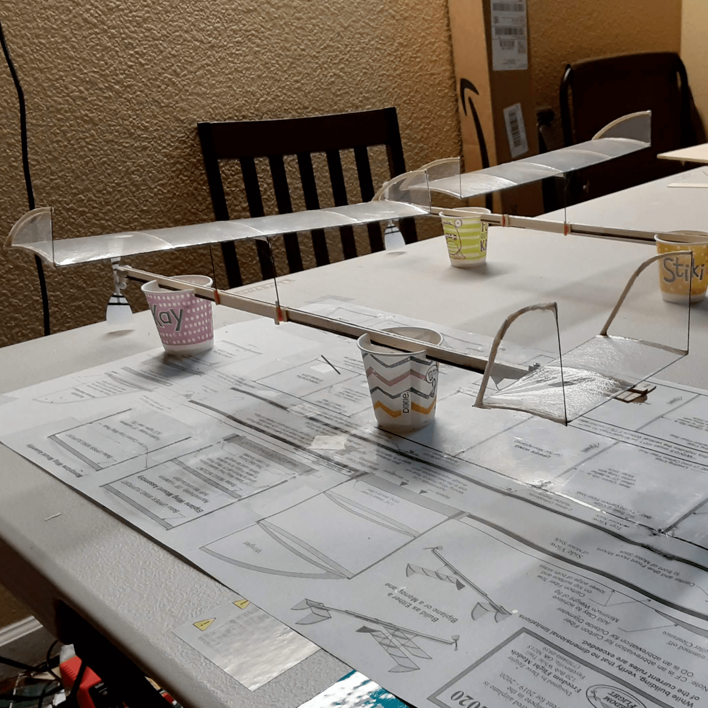
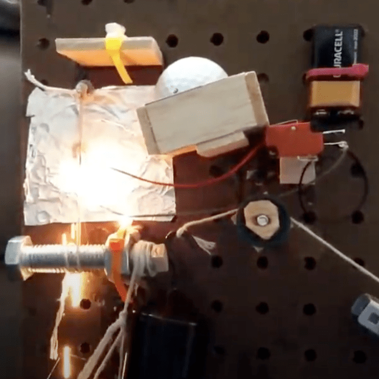
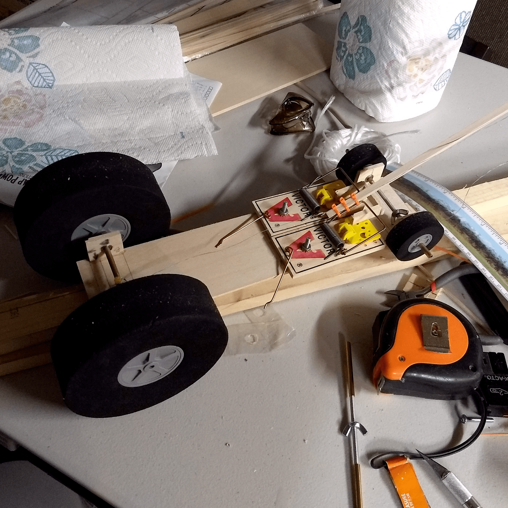

Boomilever
Boomilever involves building a cantilever beam using only balsa wood, basswood, and glue. The objective is to build the lightest possible stucture to carry as much weight as possible. A boomilever is scored based on the ratio of weight carried to the mass of the boomilever itself.
You can obtain a bonus if the boomilever carries 15 kilograms. Thus, the strategy of this event is to build a boomilever as minimal as possible to carry only up to 15 kilograms.
In this event, I learned a lot about the iterative design process as each version of my boomilevers were slight modifications to optimize the failure of the last trial. It was quite fun
to get my hands all soaked in super glue, but I'd say it was worth the experience! Below are some videos of my boomilevers. The first video is at the Bay Area Regionals competition and
the second is one of many test runs at home.
Wright Stuff
Wright Stuff involves building a model aircraft with a mass of 8 grams to fly as long as possible in circles (both directions) using only the torsion of a rubber band. The airplane is built using balsa wood,
mylar covering for the wings, cyanoacrylate glue, and model cement. The rubber band can be twisted using a 15:1 winder up to 1000 to 1500 twists and drives the main front propellor. The strategy
of this event is to tune the plane to fly in as big of a circle as possible to avoid hitting the ceiling and risk getting your plane caught.
In this event, I learned a lot about the principles of flight and the process of very finely adjusting flight parameters to get a maximal flight routine. There were about 8 parameters, including the
heights of the wing posts, the length of the fuselage, the position of the main wings, the angle of the rudder, number of winds, number of dewinds, launch angle, etc. Each of these parameters were
adjusted by very fine increments each test, as each very small change has a large impact on the flights performance. Below are some videos of my testing runs and competition flights.

Ping Pong Parachute
Ping Pong Parachute involves launching a bottle rocket which release a parachute payload carrying a ping pong ball that must have the longest hangtime possible. The rocket should be designed to maximize vertical
height (minizing rotational movement) and seamlessly release a parachute (as large as possible) to fly. I created about 15 iterations of the parachute before deciding upon the optimal parachute diameter
and string length that most reliably detached from the rocket and flew the longest.
I learned a bunch about the principles of flight and the testing involved in making parachutes. I tested with
different string types and parachute types but decided to use kevlar string with thin plastic sheets (found at laundromats). Below are some videos of my testing and competition flights.
Gravity Vehicle
Gravity Vehicle involves building a ramp and vehicle that uses gravitational potential energy to propell the car to a very pricise distance. I created a curved ramp based on the brachistochrone curve with a simple releasing mechanism for the car. My vehicle featured a 3D printed body connected by glass fiber rods and a locknut mechanism to automatically brake the car after travelling some distance. I decided to use rubber wheels to reduce the slip of the wheels against the floor and have a more accurate stop when the vehicle breaks. After constructing the vehicle, I precisely tuned the amount of revolutions needed for the locknut to break at many desired distances (8 to 12 meters in increments of 0.1 meters). I also had to be careful about how I positioned the vehicle on the ramp and aimed the ramp to allow the vehicle to go perfectly straight towards the end target. Below is a video of my gravity vehicle trial at a tournament in UC Berkeley. The vehicle reached the desired distance, however it had some horizontal error as the vehicle curved slightly over the 10 meters of distance.

Mission Possible: Rube Goldberg
Mission Possible involves building a Rube Goldberg machine in which there are a series of independent actions which cause the next to happen in a chain reaction. There is a list of tasks that needed to be fulfilled, mostly requiring the conversion of different types of energy (kinetic, heat, light, chemical, etc.). Some examples of the tasks included burning a string, having a weight go down an inclined plane, and blowing up a balloon from a reacion between baking soda and vinegar. This event taught me a lot about persistence and resilience since making the machine work reliably for competition took quite a lot of iterations and redesigning. Sometimes, things do not always work in the real world as you thought they would, and it was important to think of practical and simple designs. Unfortunately, I did not have a video of my Rube Goldberg machine, but the picture below shows one of the tasks requiring a golf ball to hit a switch which sends current into steel wool, causing a string to burn.

Mousetrap Vehicle
Mousetrap Vehicle involves building a vehicle propelled by a mousetrap to move very precise distances forward and backward. The objective of the vehicle was to push a small cup to a Cup Target Point and then drive backward to the Vehicle Target Point. To make the mousetrap move the vehicle over 10 meters of distance, I attached a long lever to the mousetrap which would pull string attached to the axle of the back wheel. I decided to make the back wheel significantly larger to cover more distance for each axle rotation driven by the mousetrap. I also designed a locknut mechanism which act as a break after the wheel competed a certain number of revolutions.
